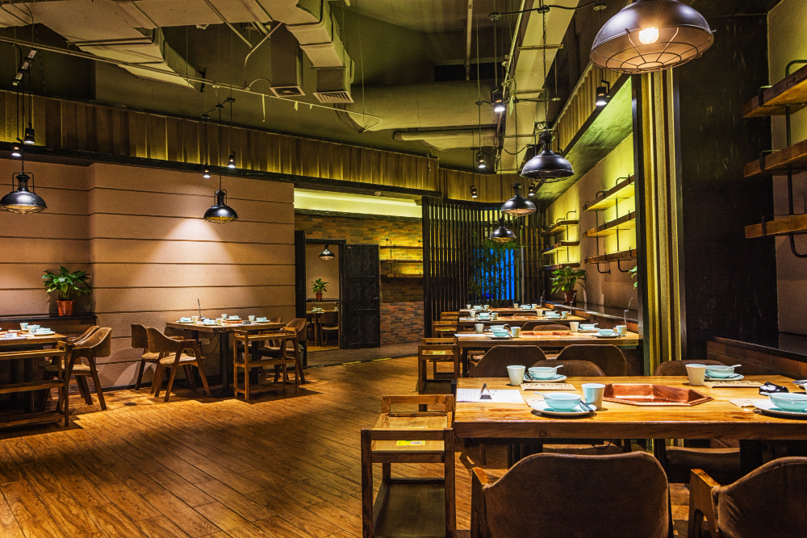
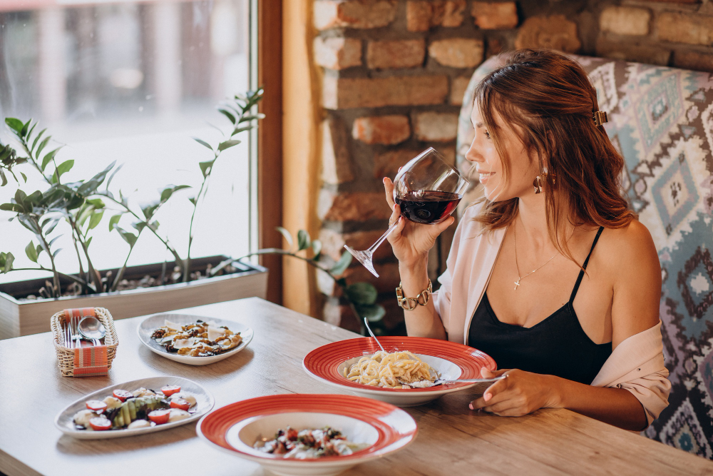

Nuestra Historia
Nos gusta que nuestros clientes nos conozcan y sepan de nuestra historia.
Sobre nosotros
La Rosa un equipo con un sueño común: crear algo hermoso y cálido como eran esas cocinas de nuestras abuelas en las que siempre nos sentíamos cómodos y todo era cálido y amable. Nuestra filosofía se basa en cuidar al mínimo los detalles, ofrecer un producto de alta calidad y originalidad, y crear un ambiente único e inolvidable Así es como nace y crece La Rosa. Un lugar en el que se disfrutan aquellos pequeños placeres de la vida.
El porque de todo esto
Hay un sitio que nos evoca todo lo que queremos ofrecer a nuestros clientes: la cocina de la abuela, ese lugar que siempre estaba abierto para nosotros, en el que nos daban la mejor comida possible, en el que nos sentíamos cómodos, tranquilos, seguros y en los que siempre cuidaban de nosotros. Este es nuestro pequeño homenaje a nuestra Meme, esa gran mujer que inspiró este sueño.